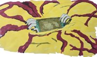
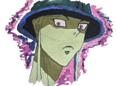

<section  id="birth">
    <div class="" data-aos="zoom-in"  >
        <h1>naissance</h1>
        <h2>Le cri du néant</h2>
        <div class="birth_meruem">
          
          <h3 class="accroche" >Il n’est pas né d’un cri, mais d’une rupture. Déchirant le ventre de la Reine, 
      Meruem est apparu comme une force brute, une perfection biologique dénuée de compassion. 
      A cet instant, il n’était pas un individu, il était une arme.</h3>
        </div>

        <p class="narratif"> Le moment de la naissance arrive trop tôt pour la reine. 
      Son fils décide de percer l’abdomen de sa mère et sort. Le Roi est né pour combattre. 
      Il ne se soucie pas le moins du monde de l’état de santé de sa mère. 
      Son aura dépasse l’entendement et sa puissance est phénoménale. 
      Il ne respecte ni les autres fourmis, ni les autres espèces. 
      Il considère les humains comme de la simple nourriture. Il impose son aura et sa puissance 
      auprès des officiers présents. Il est né pour imposer sa race à travers les autres espèces. 
        </p>
        <h2>L’héritage de la chair</h2>
        <h3 class="accroche">Chaque fibre de son être a été forgée par le sacrifice de milliers d’autres. 
        Il est l’aboutissement des connaissances et des forces dévorées. Pourtant, 
        au sommet de cette pyramide de cadavres, le Roi est seul. </h3>
        <p class="narratif">Il demande aux chefs d’escadron présents de quoi se sustenter. 
          Il tue Pegui nonchalamment, qui se présente pour secourir la Reine. 
          Il réitère sa demande de festin. Trouvant le lieu de sa naissance dégoutant, il demande à être 
          conduit dans un autre endroit. Il ordonne à Koruto (un chef d’escadron présent) de nettoyer 
          le sang de sa queue. Celui-ci, trop choqué ne réagit pas. Tortue, s’étant précipité pour obéir 
          à son Roi est tué immédiatement. Le Roi répète sa demande et Koruto obéit enfin.
          Les gardes royaux Neferupito, Shauapufu et Montutyupi, font leur apparition et font le serment de le servir. Ils partent ensemble vers le lieu du festin. Pour aller plus vite, le Roi perce le mur avec son poing et se sert de sa queue pour arriver en haut de la montagne. Son repas est trop fade à son goût. Il demande à recevoir de la nourriture ayant plus de goût. Le roi et ses trois gardes royaux partent donc de l’immense fourmilière. En chemin, le roi s’arrête pour tuer et dévorer une famille. Il trouve que leur goût est meilleur. Le roi en profite également pour remettre à sa place Neferupito qui ose lui donner un conseil.
          Il arrive au palais royal en république du Goruto est. Celui-ci devient sa demeure. A cet instant son ambition est de dominer le monde.
        </p>
        <h2>La question sans réponse</h2>
        <div class="birth_meruem">
          <div>
            <h3 class="accroche"> « Qui suis-je ? » c’est le paradoxe de sa naissance. 
          Possédant tout le savoir du monde, il ignore pourtant son propre nom. 
          Il est né pour régner sur une terre qu’il ne comprend pas, entouré de serviteurs qu’il méprise. Sa naissance n’est pas un début, 
          c’est une condamnation à la perfection.</h3>
            <p class="narratif">La reine fourmi se meurt, ses organes ont été déchirés pendant le processus. 
          Ses officiers qui lui sont dévoués, appelleront les meilleurs médecins auprès des hunters 
          pour la sauver. La reine reste dévouée à son objectif premier qui est de faire naître 
          La progéniture la plus aboutie. Elle finit par mourir en donnant le nom de son enfant 'meruemu' 
          qui signifie la lumière qui illumine tout.
          Koruto récupère le tout dernier enfant de la reine et fait le serment de le protéger.</p>
          </div>
            
        </div>
    </div>
</section>
  

 

